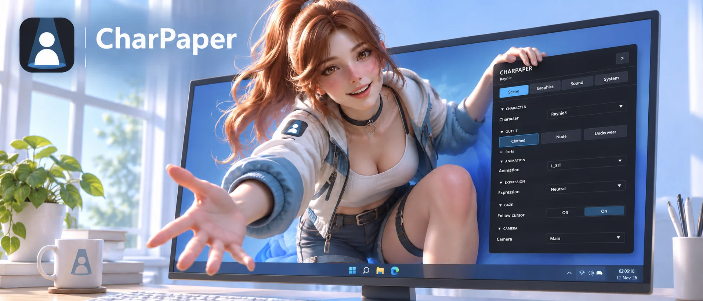

Live wallpaper for Windows 10 and 11
A 3D character on your desktop, behind your icons.
CharPaper draws a live 3D scene where your wallpaper is. Change the outfit, the animation and the expression, look around with the mouse, and tune the picture from a small panel on the desktop.
Free. 64-bit Windows. Nothing to install: extract the zip and run it. Nightly is built from every change and may have new bugs.

What it does
Everything runs in real time, behind the desktop icons. Your icons and clicks work exactly as before.
Outfits, animations, expressions
Switch what the character wears, what it does and the look on its face. Take single pieces of an outfit off and on.
Follows your cursor
Eyes, head and neck turn towards the mouse pointer on top of whatever animation plays, and settle back when the pointer rests.
Look around
Drag with the right mouse button to orbit, scroll to zoom, or switch to the cameras the character's author set up.
Places, sky and fog
Each character can come with several surroundings, each with its own lights, sky, moving props and light shafts through fog.
Music and sound
Background music and ambience for every place, and sounds that play along with the animations: footsteps, a laugh.
Several monitors
Show a different character on each screen, the same one mirrored, or one wide picture spanning them all.
Polite to your PC
A wallpaper runs all day, so CharPaper stops drawing and goes quiet whenever nobody can see it. If your computer struggles, lower the render scale, the shadows or the frame rate limit in the Graphics and System tabs.
- The screen is locked or the screen saver runs
- A game or another app runs fullscreen
- Windows cover the whole desktop
- The laptop runs on battery (optional, off by default)
For 3D artists
Bring your own character from Blender
A Blender add-on exports everything in one click: the rig, every outfit, animations, facial expressions, places with their lights and fog, cameras and sounds. No game engine knowledge needed.
- Install the add-onBlender 4.2 or newer. Download it from the same release as the app.
- Point it at your collectionsOne collection per outfit and per place, then tick the actions to export.
- Set up gaze in two clicksDetect bones finds the eyes, head and neck. Preview shows the look right in the viewport.
- Validate, then Export AllWarnings point at what would look wrong. Your .blend is never changed.
characters/aki/
suite.toml name, defaults, look model.glb the armature skins/ one file per outfit animations/ clips environment/ places, sky, music cameras/ extra cameras sounds/ animation sounds luts/ color grades
A character is just a folder. Drop it into characters next to the app.
Get started
- DownloadGet the zip from the latest release.
- Extract itInto your own folders, like Documents. Not Program Files: settings are saved next to the app.
- Add a characterCharPaper comes with none. Put a character's folder into
characters. - Run charpaper.exeIf Windows warns you, click More info, then Run anyway. The app isn't signed yet.